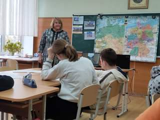
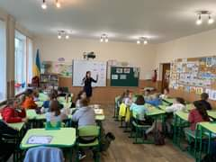

1 жовтня, ми відзначали День учителя.
З 7го по 11е листопада в нашому ліцеї проходив Тиждень іноземнив мов. В цій події зяли участь учні молошої, середньої та старшої школи. Вчителі кафедри іноземних мов проводили відкриті уроки та заходи англійською та німеькою мовами.
 